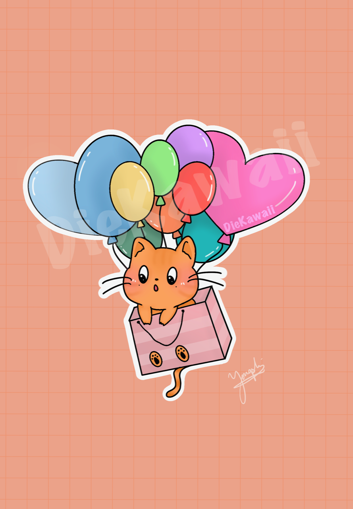
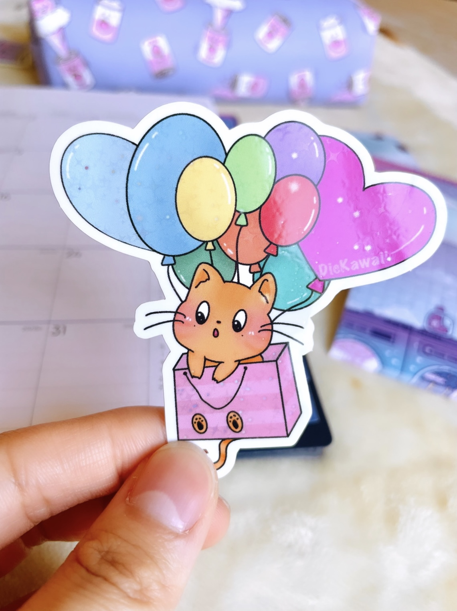
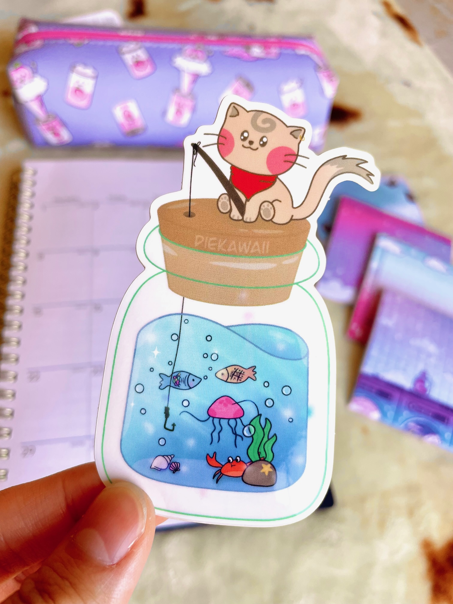
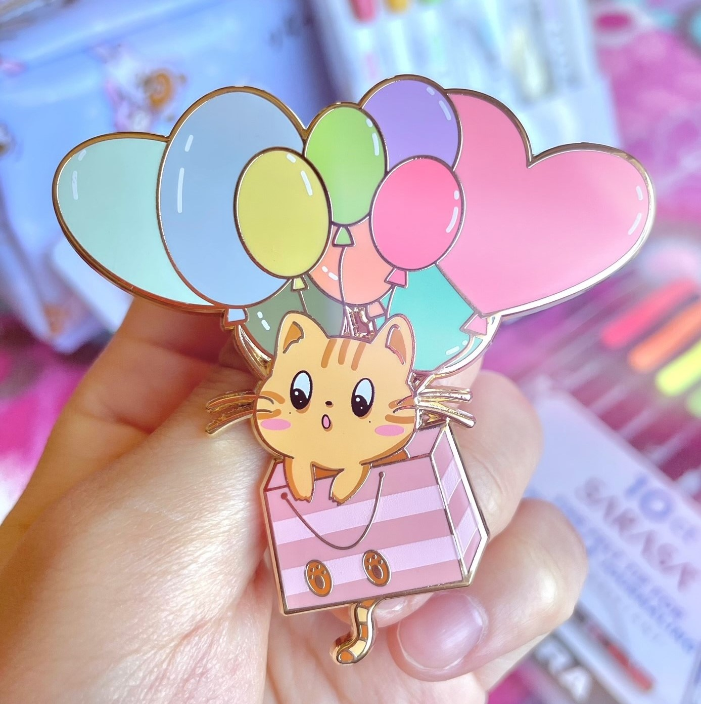
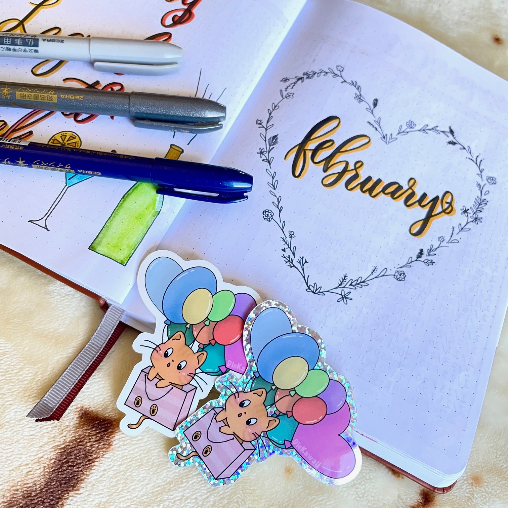
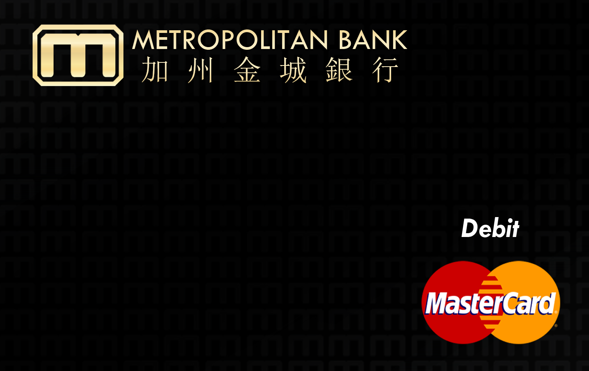
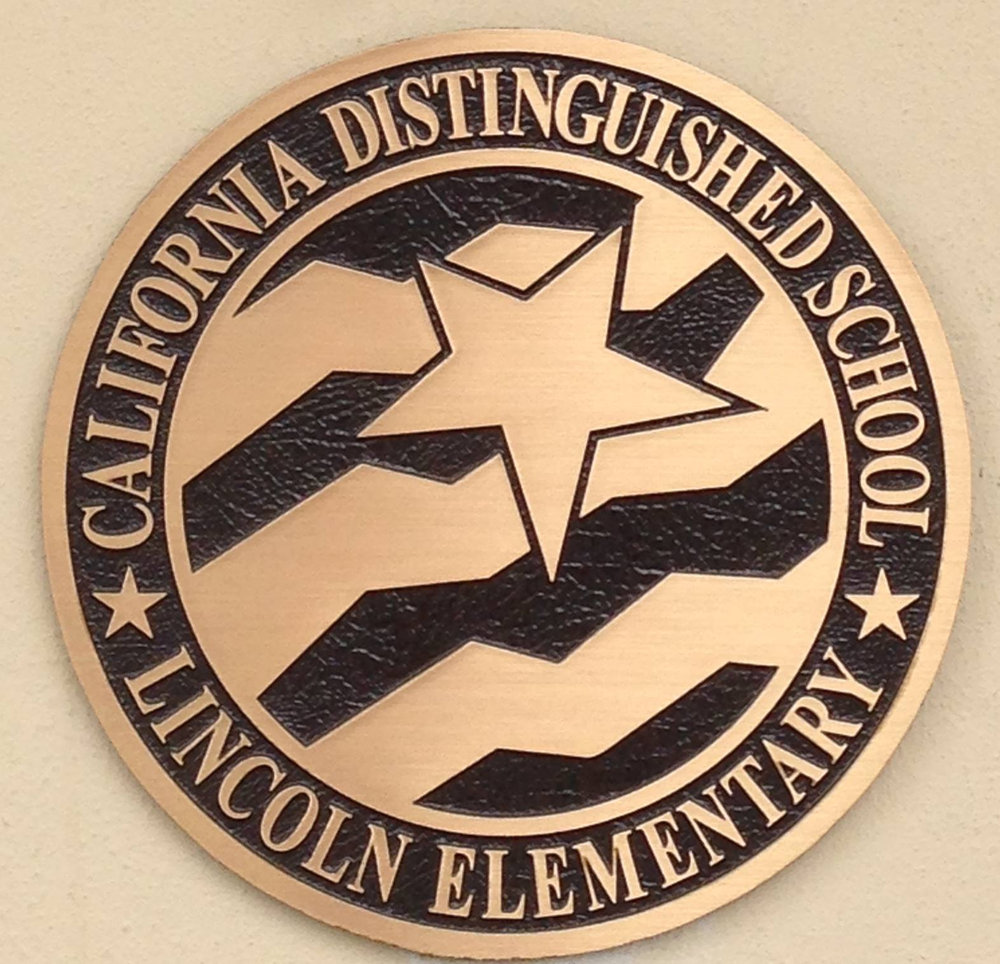
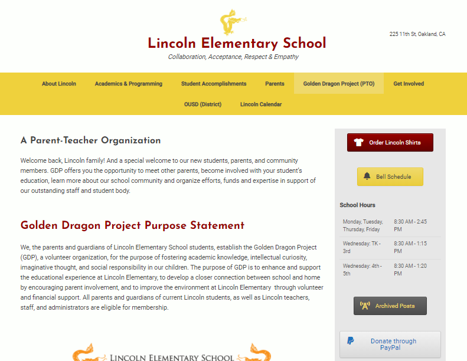
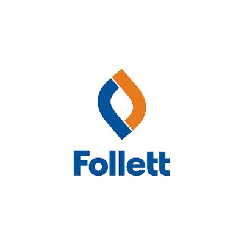
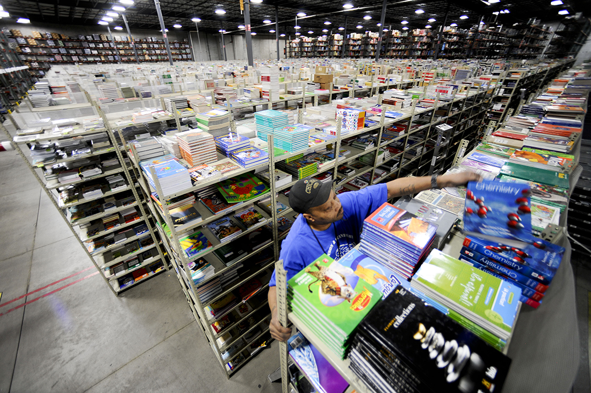

DieKawaii
My own stationary shop
DieKawaii
~June 18, 2022 - Present~
DieKawaii's Instagram DieKawaii's Etsy ShopDieKawaii is a brand that makes cute and bright-colored stationaries. The word Kawaii means "cute" in Japanese. The name comes from the attitude that "No matter what happens, at least I'm still cute. And I will stay cute until the day I die"
   - Draws and creates all artwork and product designs belonging to DieKawaii totaling up to at least 100+ hours.
- Administers all aspect of DieKawaii including social media content, product listings, finances, shipping packages and etc.
- Negotiate with multiple manufacturers including ones on Alibaba to produce products overseas and domestically.
- Market products on social media using modern day technology and trendy short videos to reach the appropriate audience.
Contributions as a CEO, Social Media Manager, Finance Manager, Marketing Manager:
Metropolitan Bank
Chinatown, Oakland
Metropolitan Bank
~February 23, 2021 - Present~
Metropolitan Bank's WebsiteMetropolitan Bank values the communities that make up the SF Bay Area and strongly believes in involvement with the local community by remaining active with community organizations and by participating in local events. Metropolitan Bank consists of 4 branches: 2 in Oakland, 1 in San Jose, and 1 in San Fransisco.


- Handles customer financial transactions such as deposits, withdrawals, transfers, money orders, loans, and cashier checks.
- Fulfills duties including preparing daily branch reports, filing paperwork, and balancing numbers at the end of the day.
- Conducts cash consolidation along with reconciling transactions according to the bank's procedures and policies.
- Repair vulnerabilities on all workstations and servers as well as pushing out patches and updating softwares daily
- Handles all helpdesk support issues including technical assistance related to computer systems, hardware, and software
- Foresees all software installations including anti-virus, anti-malware while managing monthly IT reports for board meetings, phishing emails, spoof emails, website access through firewall, tickets with outside vendors and internal staffs
- Performs regular maintenance and updates for the bank's official website while also ensuring that it is compliant with the ADA compliance.
- Create promotional fliers to promote new time deposit rates and newly launched projects such as our mobile application software in different languages.
- Design digital artwork for official bank products such as apple pay wallet card design, custom golf ball design, and more totaling up to 50+ hours.
- Manage all contact relationships with third parties and manufacturers to produce bank merchandise and to feature our advertisments in the local newspapers. 
Contributions as a Teller:
Contributions as an IT Network Administrator
Contributions as a Marketing Graphic Designer
Lincoln Elementary School
Chinatown, Oakland
Lincoln Elementary School Golden Dragon Project
~February 15, 2021 - Present~
Lincoln Elementary School's WebsiteLincoln Elementary School, a TK-5 public elementary school of over 700 students is located in Oakland Chinatown. The school receives Title I funding. A large percentage of the student population comes from homes where a language other than English is spoken. Their mission is to inspire and challenge students to excel academically and socially, and emotionally through their guidance and positive modeling.
 - Oversees and troubleshoots the Lincoln Elementary School official website for the Oakland Unified School District.
- Updates the website monthly with new information and data about current events and situations for parents and teachers.
- Performs website maintenance to ensure that the website is running smoothly with UI that is easy to navigate around.
Contributions as a Web Master/Manager:


Follett Corporation
Laney College
Follett Corporation Career Oportunities
~August 13, 2019 - September 20, 2019~
Follett Corporation's WebsiteFollett Corporation is a company that help colleges and universities get their textbooks. I worked as a Seasonal Retail Team Member during the summer of 2019 at the Laney College book store.

- Assisted the manager on in-store transit invoices as well as special book orders from book manufacturers.
- Contributed to reaching the store’s daily sales goal and increasing profits by displaying proper employee etiquettes.
- Promoted opportunities such as EOPS for customers to make more cost-effective purchases in store.
Contributions as a Seasonal Retail Team Member:
Youth Radio
Oakland, CA
Youth Radio Media
~September 2015 - January 2016
Youth Radio's WebsiteYouth Radio Media is a place where young artist and authors/journalists can voice their opinions about current events and news. Youth Radio has created many multimedia content for this generation by this generation.
- Enhanced photographs by adjusting the ISO, shutter speed and aperture to balance out lighting and focus points.
- Executed different type of shots such as wide shots, close up shots and off the shoulder shots to convey perspective.
- Recorded interviews and podcast that were featured on the Youth Radio website and YouTube channel.